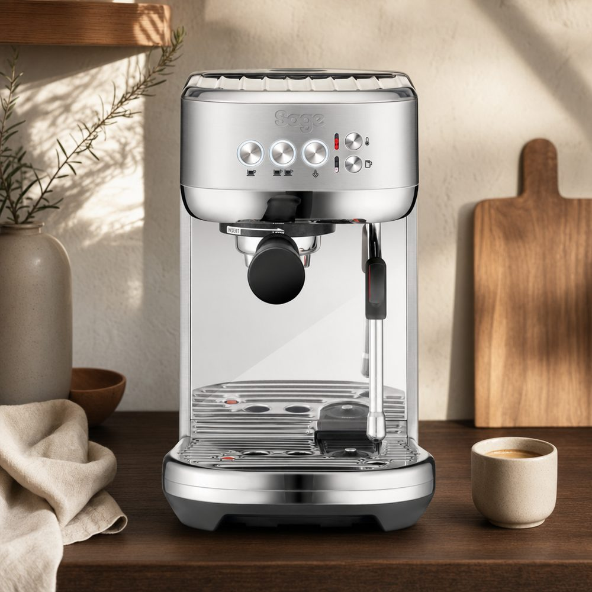

Der Einstieg in echten Espresso muss keine 1.000 € kosten – aber unter den günstigen Maschinen liegen Welten zwischen „schmeckt wie im Café" und „teurer Kapselersatz". Wir vergleichen die fünf beliebtesten Einsteigermodelle in Deutschland – mit Punktetabelle und klaren Kriterien.
| 🏆 Sage Bambino Plus | Sage Bambino (SES450) | WMF Lumero | Solis Barista Perfetta Plus | De'Longhi Dedica EC685 | |
|---|---|---|---|---|---|
| Gesamtnote | 4,6 Testsieger | 4,4 Preis-Leistung | 4,2 Geheimtipp | 4,1 | 3,9 |
| Preis ca.* | ab 399 € Bei roastmarket* Bei Amazon* | ab 266 € Bei roastmarket* Bei Amazon* | ab 194 € Bei roastmarket* Bei Amazon* | ab 349 € Bei roastmarket* Bei Amazon* | ab 125 € Bei De'Longhi* Bei Amazon* |
| Amazon-Kundenbewertung ca.¹ | 4,5★ | 4,5★ | 4,2★ | 4,3★ | 4,3★ |
| Heizsystem | ThermoJet | ThermoJet | Thermoblock | Thermoblock | Thermoblock |
| Aufheizzeit | ca. 3 Sekunden | ca. 3 Sekunden | 30–40 Sekunden | ca. 1 Minute | ca. 40 Sekunden |
| Siebträger | 54 mm | 54 mm | 51 mm; 3 Siebeinsätze (1 Tasse, 2 Tassen, ESE-Pads) | 54 mm | 51 mm (Drucksieb) |
| Milchschaum | automatisch oder manuell | manuell (kräftige Lanze) | manuell (Dampfdüse) | manuell (Profi-Lanze) | manuell (Aufschäumhilfe) |
| Für wen? | Cappuccino-Fans, Ungeduldige, Qualitätsanspruch | kleine Küchen, Espresso-Fokus | kleinstes Budget + guter Geschmack | Einsteiger, die viel einstellen wollen | absolutes Minimalbudget |
*Marktpreise Deutschland, Stand 24.07.2026. Alle fünf Maschinen benötigen eine separate Kaffeemühle (oder frisch gemahlenen Kaffee) – Empfehlungen im Mühlen-Test. Produktabbildungen sind KI-generierte Illustrationen zur Veranschaulichung, keine Herstellerfotos.
| Kriterium (Gewicht) | Bambino Plus | Bambino | Lumero | Solis | Dedica |
|---|---|---|---|---|---|
| Espressoqualität (40 %) | 4,5 | 4,5 | 4,3 | 4,2 | 3,6 |
| Milchschaum (15 %) | 5,0 | 4,0 | 3,6 | 4,2 | 3,5 |
| Bedienung & Alltag (15 %) | 5,0 | 4,8 | 4,3 | 4,0 | 4,3 |
| Verarbeitung (15 %) | 3,9 | 3,9 | 4,3 | 4,2 | 3,8 |
| Preis-Leistung (15 %) | 4,7 | 4,8 | 4,3 | 4,0 | 4,6 |
| Gesamtnote | 4,6 | 4,4 | 4,2 | 4,1 | 3,9 |

Die Bambino Plus ist die Maschine, die Einsteigern am schnellsten gute Ergebnisse liefert: Das ThermoJet-Heizsystem ist in rund drei Sekunden betriebsbereit, der 54-mm-Siebträger arbeitet mit ordentlichem Anpressdruck, und die automatische Milchschaumfunktion nimmt Anfängern die größte Hürde ab. Im Blindtest von ARD/SWR Marktcheck lag sie geschmacklich vor allen Konkurrenten dieser Preisklasse.
Die kleine Schwester der Bambino Plus: gleiches ThermoJet-System, gleicher 54-mm-Siebträger, gleiche 3-Sekunden-Bereitschaft – aber Milchschaum nur manuell und ein kleinerer 1,4-l-Tank. Für rund 130 € weniger bekommst du denselben Espresso; du verzichtest „nur" auf den Automatik-Milchschaum. Espresso-Trinker und alle, die das Schäumen ohnehin lernen wollen, sparen hier am klügsten. Fairerweise: Der ARD-Geschmackssieg wurde mit der Plus erzielt – die SES450 ist technisch aber eng verwandt.
Der Überraschungszweite der ARD/SWR-Blindverkostung: Für ab ca. 194 € liefert die nur 14 cm schmale Lumero einen Espresso, der deutlich teurere Konkurrenz geschmacklich schlug. Dazu Cromargan-Edelstahl, 30–40 Sekunden Aufheizzeit und drei Siebeinsätze: je ein Sieb für 1 Tasse, für 2 Tassen und für ESE-Pads (vorportionierte Kaffee-Pads). Der Siebträger misst 51 mm im Durchmesser – Zubehör wie bodenlose Siebe ist dafür seltener als beim 54/58-mm-Standard. Die Grenzen: kein PID, wenig Kontrolle über Temperatur und Druck, einfache Dampfdüse. Zum Reinschnuppern ohne Risiko ist sie aktuell die beste Wahl unter 200 €.
Mit rund 125 € und nur 15 cm Breite ist die Dedica der günstigste und kompakteste Weg zum Siebträger. Dafür gibt es Kompromisse: Das 51-mm-Drucksieb kaschiert Mahlgrad-Fehler (gut für den Start, schlecht fürs Lernen), und im ARD/SWR-Geschmackstest landete sie hinter der Konkurrenz. Wer einfach günstig Espresso mit Crema will, wird trotzdem glücklich – wer „richtig" einsteigen will, spart besser auf die Bambino.
Die Schweizerin bietet in dieser Klasse die meisten manuellen Eingriffe: Brühtemperatur in Stufen wählbar, Manometer zur Druckkontrolle, ordentliche Dampflanze. Im Geschmackstest Platz drei – solide, aber angesichts des ähnlichen Preises zur Bambino Plus ist sie vor allem für alle interessant, die von Anfang an tüfteln wollen statt Knöpfe zu drücken.
| Du bist… | Unsere Empfehlung |
|---|---|
| Cappuccino-/Latte-Trinker und willst schnell gute Ergebnisse | Sage Bambino Plus |
| Espresso-Fokus, kompakte Küche, ca. 270 € Budget | Sage Bambino (SES450) |
| Unter 200 € den besten Geschmack mitnehmen | WMF Lumero |
| Espresso-Purist mit maximal 150 € Budget | De'Longhi Dedica EC685 |
| Tüftler, der Temperatur & Druck selbst steuern will | Solis Barista Perfetta Plus |
| Bereit, gleich inkl. Mühle zu denken (~500 € gesamt) | → Mittelklasse-Vergleich ansehen |
Testsieger 2026 ist die Sage Bambino Plus (Redaktionswertung 4,6/5, ab ca. 399 €): in rund 3 Sekunden betriebsbereit, automatischer Milchschaum und Geschmackssieger der ARD/SWR-Blindverkostung. Preis-Leistungs-Tipp ist die Sage Bambino SES450 (ab ca. 266 €), Geheimtipp unter 200 € die WMF Lumero.
Gute Einsteiger-Siebträger kosten ca. 125–450 €. Realistisch solltest du inkl. Mühle (ab ca. 150 €) und Zubehör (ca. 50 €) mit 350–650 € Gesamtbudget rechnen – Details in der Kaufberatung.
Der Aufpreis von ca. 130 € kauft ausschließlich Komfort: automatischer Milchschaum (Temperatur & Konsistenz wählbar) und der größere 1,9-l-Tank. Espressoqualität und Technik sind praktisch identisch. Milchgetränke-Haushalt: Plus. Espresso-Purist: SES450 reicht.
Ja – frisch und fein gemahlener Kaffee macht mehr Geschmacksunterschied als die Maschine selbst. Entweder eine Espressomühle ab ca. 150 € einplanen (z. B. Graef CM 800, siehe Mühlen-Test) oder frisch für Espresso gemahlenen Kaffee vom Röster kaufen.
Für Espresso mit Crema und Milchgetränke: ja. Für das volle Geschmackspotenzial und echtes Barista-Lernen: eher nicht – das Drucksieb der Budget-Klasse verzeiht viel, verhindert aber auch Feintuning.
Als Startrezept gelten 25–30 Sekunden für ein Brühverhältnis von 1:2 – also z. B. 18 g Kaffeemehl auf 36 g Espresso in der Tasse. Läuft der Bezug deutlich schneller, feiner mahlen; läuft er deutlich langsamer, gröber mahlen.
Sauer heißt meist unterextrahiert: feiner mahlen, etwas heißer brühen, länger beziehen. Bitter heißt überextrahiert: gröber mahlen, kürzer beziehen. Mit Waage, festem Rezept (1:2 in 25–30 s) und frischen Bohnen verschwinden 90 % dieser Probleme.
Nicht sinnvoll: Filterkaffee ist viel zu grob gemahlen und liefert dünnen Espresso ohne Crema. Du brauchst eine Espressoröstung, so fein gemahlen, dass der Bezug 25–30 Sekunden dauert – ideal frisch aus einer Espressomühle.
Mühle (ab ca. 150 €, siehe Mühlen-Test) oder frisch gemahlener Kaffee, Tamper (falls nicht ordentlich beiliegend), Abschlagbehälter und Milchkännchen. Realistisch: 50–250 € Zubehörbudget – Details auf der Zubehör-Seite.
Die Lernkurve ist überschaubar: Mit Waage, Startrezept und 1–2 Wochen Übung sitzt der Espresso. Maschinen wie die Bambino Plus nehmen mit automatischem Milchschaum und fester Brühtemperatur die größten Hürden ab.
Weil roastmarket aktuell sehr gute Preise bietet und im Reparaturfall deutlich mehr Service als Amazon: Deutschlands größter Kaffee-Fachhändler hat eine eigene Fachwerkstatt und betreut auch Premium-Marken über die Gewährleistung hinaus. Dennoch empfiehlt es sich, vor dem Kauf auch bei Amazon kurz zu schauen – die Preise ändern sich täglich: Siebträgermaschinen bei Amazon*.